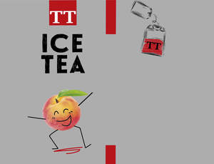

Trade Mark Journal No.2025/014 4 April 2025
UK00004178183 24 March 2025 (30,32)

- Class 30
- Tea; Oolong tea [Chinese tea]; Oolong tea; Rooibos tea; Chai tea; Chamomile tea; Iced tea; Tea (Iced -); Tieguanyin tea; Darjeeling tea; Herbal tea; Peppermint tea; Black tea [English tea]; Ginseng tea; Ginger tea; Jasmine tea; Tea beverages; Green tea; Instant Oolong tea; Rosemary tea; Barley tea; Buckwheat tea; Fermented tea; Tea extracts; Tea leaves; Citron tea; Flavourings of tea; Kelp tea; Tea beverages with milk; Sage tea; Lime tea; Tea pods; Lapsang souchong tea; Black tea; White tea; Teas; Iced tea (Non-medicated -); Tea essences; Linden tea; Iced teas; Yellow tea; Herb tea [infusions]; Mate [tea]; Beverages with tea base; Beverages with a tea base; Red ginseng tea; Barley-leaf tea; Instant tea; Tea mixtures; Ginseng tea [insamcha]; Tea substitutes; Tea (Non-medicated -); Herbal tea [other than for medicinal use]; Artificial tea; Beverages made of tea; Instant green tea; Japanese green tea; Herbal teas; Tea beverages (Non-medicated -); Fruit flavoured tea [other than medicinal]; Instant white tea; Orange flavoured tea [other than for medicinal use]; Instant black tea; Fruit teas; Jasmine tea, other than for medicinal purposes; Earl grey tea; Earl Grey tea.
- Class 32
- Soft drinks flavored with tea; Non-alcoholic beverages flavoured with tea; Non-alcoholic beverages with tea flavor; Non-alcoholic beverages flavored with tea; Non-alcoholic soda beverages flavoured with tea.
HIGHLAND SCOTCH HOUSE LTD